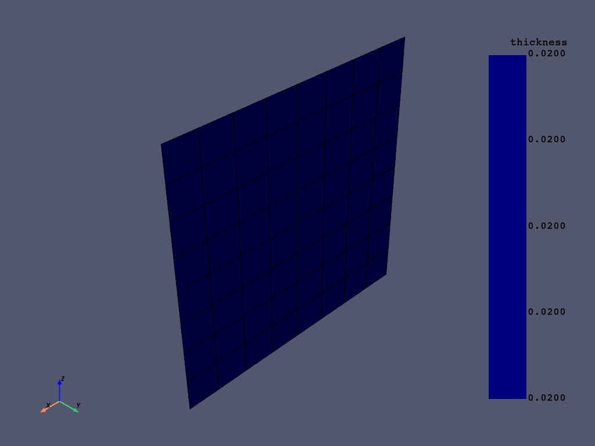
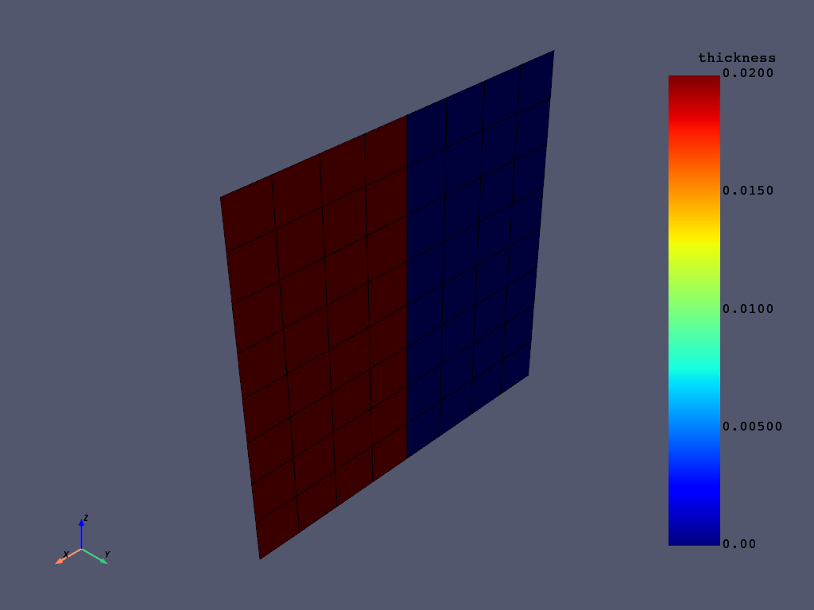
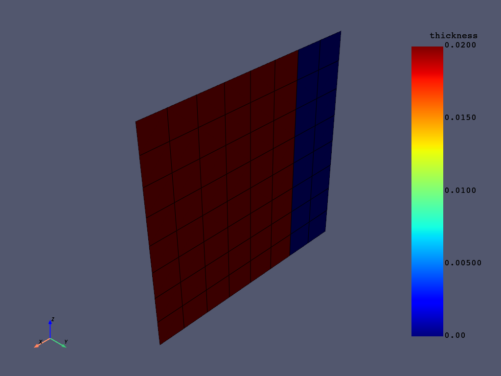
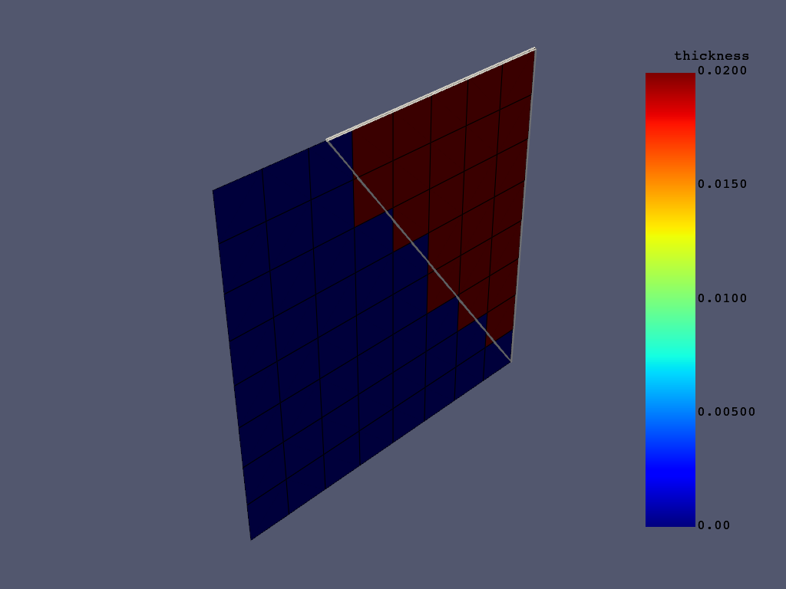
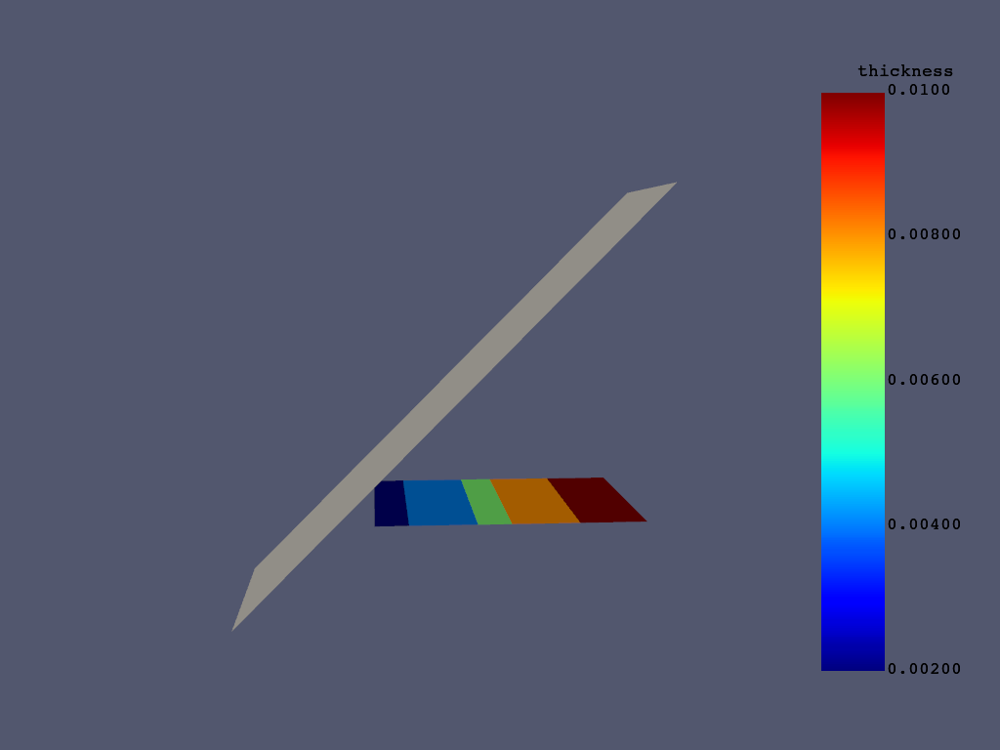
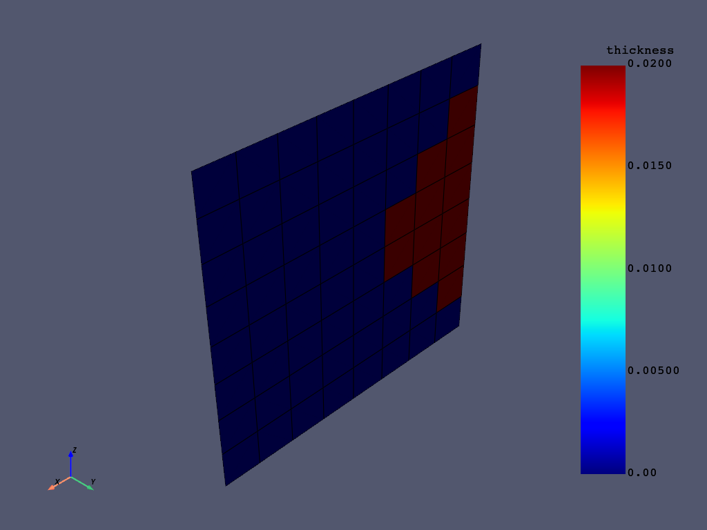
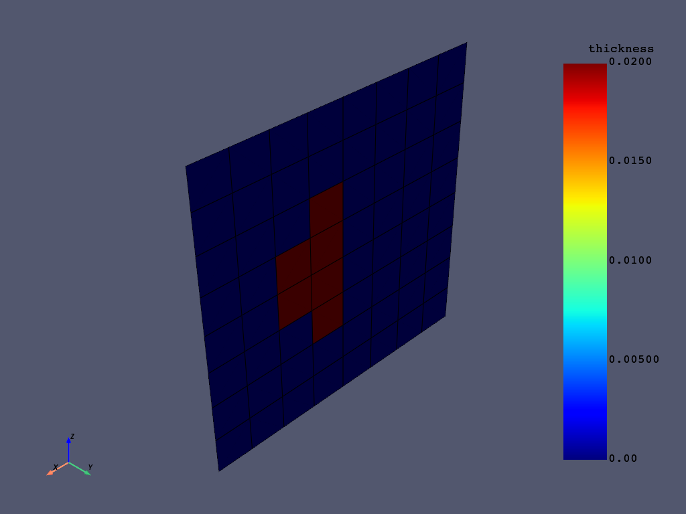
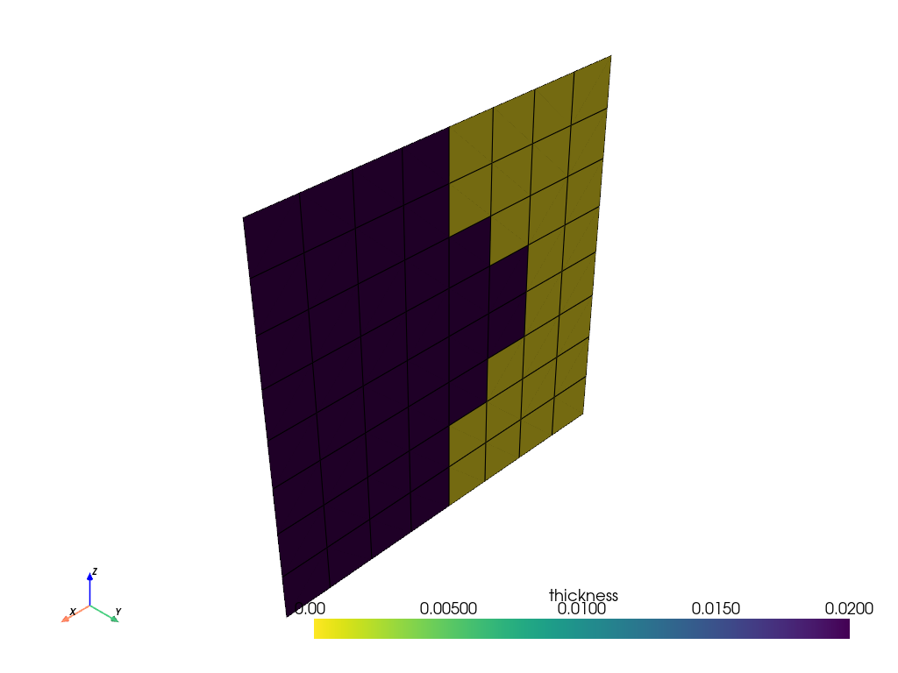

Note
Go to the end to download the full example code
Advanced rules example#
This example shows the usage of advanced rules such as geometrical rule, cut-off rule and variable offset rule. It also demonstrates how rules can be templated and reused with different parameters. See the Basic selection rules example for more basic rule examples. This example shows just the pyACP part of the setup. For a complete Composite analysis, see the Basic PyACP Example example
Import standard library and third-party dependencies
import pathlib
import tempfile
import numpy as np
import pyvista
Import pyACP dependencies
from ansys.acp.core import (
ACPWorkflow,
BooleanOperationType,
DimensionType,
EdgeSetType,
LinkedSelectionRule,
example_helpers,
launch_acp,
)
from ansys.acp.core.example_helpers import ExampleKeys, get_example_file
Start ACP and load the model#
Get example file from server
tempdir = tempfile.TemporaryDirectory()
WORKING_DIR = pathlib.Path(tempdir.name)
input_file = get_example_file(ExampleKeys.MINIMAL_FLAT_PLATE, WORKING_DIR)
Launch the PyACP server and connect to it.
acp = launch_acp()
Define the input file and instantiate an ACPWorkflow. The ACPWorkflow class provides convenience methods which simplify the file handling. It automatically creates a model based on the input file. The input file contains a flat plate with a single ply.
workflow = ACPWorkflow.from_acph5_file(
acp=acp,
acph5_file_path=input_file,
local_working_directory=WORKING_DIR,
)
model = workflow.model
print(workflow.working_directory.path)
print(model.unit_system)
/tmp/tmp14qj2_co
mks
Add more layers to the modeling ply, so it easier to see the effects of the selection rules. Plot the thickness of all the plies without any rules.
modeling_ply = model.modeling_groups["modeling_group"].modeling_plies["ply"]
modeling_ply.number_of_layers = 10
model.update()
assert model.elemental_data.thickness is not None
model.elemental_data.thickness.get_pyvista_mesh(mesh=model.mesh).plot(show_edges=True)

Parametrized Parallel Rule#
Rules can be parametrized. This makes sense when a rule is used multiple times with different
parameters. LinkedSelectionRule shows what parameters are available for each rule.
Here, the extent of the parallel rule is modified.
Create a parallel rule.
parallel_rule = model.create_parallel_selection_rule(
name="parallel_rule",
origin=(0, 0, 0),
direction=(1, 0, 0),
lower_limit=0.005,
upper_limit=1,
)
Assign it the modeling ply.
linked_parallel_rule = LinkedSelectionRule(parallel_rule)
modeling_ply.selection_rules = [linked_parallel_rule]
Plot the thickness of the ply before the parametrization.
model.update()
assert model.elemental_data.thickness is not None
model.elemental_data.thickness.get_pyvista_mesh(mesh=model.mesh).plot(show_edges=True)

Modify the parallel rule by changing the parameters of the linked rule. Parameters defined on the linked rule override the parameters of the original rule.
linked_parallel_rule.template_rule = True
linked_parallel_rule.parameter_1 = 0.002
linked_parallel_rule.parameter_2 = 0.1
Plot the thickness of the ply with the modified rule.
model.update()
assert model.elemental_data.thickness is not None
model.elemental_data.thickness.get_pyvista_mesh(mesh=model.mesh).plot(show_edges=True)

Create a geometrical selection rule#
Add CAD geometry to the model.
triangle_path = example_helpers.get_example_file(
example_helpers.ExampleKeys.RULE_GEOMETRY_TRIANGLE, WORKING_DIR
)
triangle = workflow.add_cad_geometry_from_local_file(triangle_path)
# Note: It is important to update the model here, because the root_shapes of the
# cad_geometry are not available until the model is updated.
model.update()
Create a virtual geometry from the CAD geometry.
triangle_virtual_geometry = model.create_virtual_geometry(
name="triangle_virtual_geometry", cad_components=triangle.root_shapes.values()
)
Create the geometrical selection rule.
geometrical_selection_rule = model.create_geometrical_selection_rule(
name="geometrical_rule",
geometry=triangle_virtual_geometry,
)
Assign the geometrical selection rule to the ply and plot the ply extent with the outline of the geometry.
modeling_ply.selection_rules = [LinkedSelectionRule(geometrical_selection_rule)]
model.update()
assert model.elemental_data.thickness is not None
plotter = pyvista.Plotter()
plotter.add_mesh(
triangle.visualization_mesh.to_pyvista(), style="wireframe", line_width=4, color="white"
)
plotter.add_mesh(model.elemental_data.thickness.get_pyvista_mesh(mesh=model.mesh), show_edges=True)
plotter.show()

Create a cutoff selection rule#
Add the cutoff CAD geometry to the model.
cutoff_plane_path = example_helpers.get_example_file(
example_helpers.ExampleKeys.CUT_OFF_GEOMETRY, WORKING_DIR
)
cut_off_plane = workflow.add_cad_geometry_from_local_file(cutoff_plane_path)
# Note: It is important to update the model here, because the root_shapes of the
# cad_geometry are not available until the model is updated.
model.update()
Create a virtual geometry from the CAD geometry.
cutoff_virtual_geometry = model.create_virtual_geometry(
name="cutoff_virtual_geometry", cad_components=cut_off_plane.root_shapes.values()
)
Create the cutoff selection rule.
cutoff_selection_rule = model.create_cutoff_selection_rule(
name="cutoff_rule",
cutoff_geometry=cutoff_virtual_geometry,
)
Assign the cutoff selection rule to the ply and plot the ply extent with the outline of the geometry.
modeling_ply.selection_rules = [LinkedSelectionRule(cutoff_selection_rule)]
model.update()
assert model.elemental_data.thickness is not None
plotter = pyvista.Plotter()
plotter.add_mesh(cut_off_plane.visualization_mesh.to_pyvista(), color="white")
plotter.add_mesh(model.elemental_data.thickness.get_pyvista_mesh(mesh=model.mesh))
plotter.camera_position = [(-0.05, 0.01, 0), (0.005, 0.005, 0.005), (0, 1, 0)]
plotter.show()

Create a variable offset selection rule#
Create the lookup table.
lookup_table = model.create_lookup_table_1d(
name="lookup_table",
origin=(0, 0, 0),
direction=(0, 0, 1),
)
Add the location data. The “Location” column of the lookup table is always created by default.
lookup_table.columns["Location"].data = np.array([0, 0.005, 0.01])
Create the offset column that defines the offsets from the edge.
offsets_column = lookup_table.create_column(
name="offset",
dimension_type=DimensionType.LENGTH,
data=np.array([0.00, 0.004, 0]),
)
Create the edge set from the “All_Elements” element set. Because we set the limit angle to 30°, only one edge at x=0 will be selected.
edge_set = model.create_edge_set(
name="edge_set",
edge_set_type=EdgeSetType.BY_REFERENCE,
limit_angle=30,
element_set=model.element_sets["All_Elements"],
origin=(0, 0, 0),
)
Create the variable offset rule and assign it to the ply.
variable_offset_rule = model.create_variable_offset_selection_rule(
name="variable_offset_rule", edge_set=edge_set, offsets=offsets_column, distance_along_edge=True
)
modeling_ply.selection_rules = [LinkedSelectionRule(variable_offset_rule)]
Plot the ply extent.
model.update()
assert model.elemental_data.thickness is not None
model.elemental_data.thickness.get_pyvista_mesh(mesh=model.mesh).plot(show_edges=True)

Create a boolean selection rule.#
Note: Creating a boolean selection rule and assigning it to a ply has the same effect as linking the individual rules to the ply directly. Boolean rules are still useful because they help to organize the rules and can be used to create more complex rules. Create a cylindrical selection rule which will be combined with the parallel rule.
cylindrical_rule_boolean = model.create_cylindrical_selection_rule(
name="cylindrical_rule",
origin=(0.005, 0, 0.005),
direction=(0, 1, 0),
radius=0.002,
)
parallel_rule_boolean = model.create_parallel_selection_rule(
name="parallel_rule",
origin=(0, 0, 0),
direction=(1, 0, 0),
lower_limit=0.005,
upper_limit=1,
)
linked_cylindrical_rule_boolean = LinkedSelectionRule(cylindrical_rule_boolean)
linked_parallel_rule_boolean = LinkedSelectionRule(parallel_rule_boolean)
boolean_selection_rule = model.create_boolean_selection_rule(
name="boolean_rule",
selection_rules=[linked_parallel_rule_boolean, linked_cylindrical_rule_boolean],
)
modeling_ply.selection_rules = [LinkedSelectionRule(boolean_selection_rule)]
Plot the ply extent.
model.update()
assert model.elemental_data.thickness is not None
model.elemental_data.thickness.get_pyvista_mesh(mesh=model.mesh).plot(show_edges=True)

Modify the operation type of the boolean selection rule, such that the two rules are added.
linked_parallel_rule_boolean.operation_type = BooleanOperationType.INTERSECT
linked_cylindrical_rule_boolean.operation_type = BooleanOperationType.ADD
Plot the ply extent.
model.update()
assert model.elemental_data.thickness is not None
model.elemental_data.thickness.get_pyvista_mesh(mesh=model.mesh).plot(show_edges=True)

Total running time of the script: ( 0 minutes 7.725 seconds)